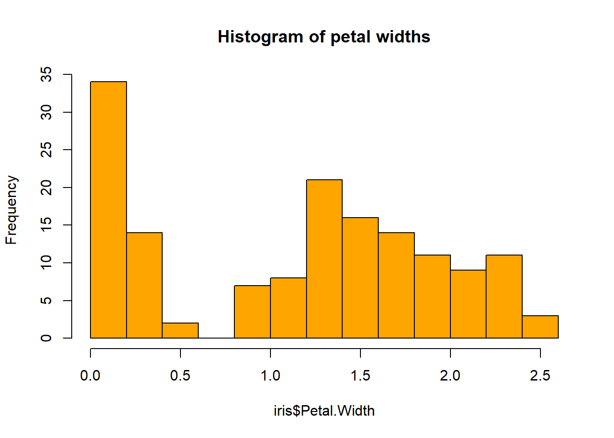

1 Familiarizándose con R y RStudio
1.1 Introducción. Objetivo.
El objetivo principal de este lab es presentarte R y RStudio, el software que utilizaremos a lo largo del curso para recopilar datos, trabajarlos, visualizarlos y producir análisis estadísticos que nos permitan llegar a conclusiones fundamentadas sobre los problemas planteados.
Asumiremos que no tienes ninguna experiencia previa con R o RStudio, así que en este lab cubriremos lo más básico, empezando por la instalación del software y los primeros pasos. Si ya sabes algo de R, puede que encuentres algunos de los temas bastante básicos, y eres libre de saltar a donde quieras dentro del documento. Ten en cuenta, sin embargo, que a veces daré algunos consejos y sugerencias que pueden ser interesantes incluso si tienes experiencia con R.
1.2 ¿Qué son R y RStudio?
En este lab, y durante todo el curso, vamos a utilizar R a través de RStudio. Esto no es obligatorio, por supuesto, pero es muy recomendable. Es común al principio confundir los dos. R es un lenguaje de programación, mientras que RStudio es un entorno de desarrollo integrado (IDE), es decir, una interfaz que añade muchas herramientas y características convenientes y hace mucho más fácil la experiencia de usar R. Tomaré aquí la analogía de ModernDive y la simplificaré diciendo que, si R es el motor de un coche, RStudio sería el panel de mandos. Y como ocurre con el coche, claro que podemos ejecutar R sin RStudio, pero es mucho más fácil aprovechar sus múltiples e interesantes características. Además, RStudio (y el propio R) es gratuito, de código abierto y multiplataforma.

Instalación de R y RStudio
Recuerda que R es el nombre del propio lenguaje de programación y RStudio es un IDE (es decir, una interfaz), por lo que no podrás utilizar RStudio sin instalar previamente R.
Descarga e instala la última versión de R aquí
Descarga e instala RStudio aquí
Ten en cuenta que si utilizas los ordenadores de la Universidad, estos ya tienen instaladas las versiones adecuadas de R y RStudio.
1.3 La interfaz de RStudio
La mala noticia es que R es un lenguaje de programación, y esto significa que tienes que escribir comandos en código R, y ejecutarlos para obtener el resultado. No te preocupes, la buena noticia es que no necesitas ser un programador experto para poder utilizar R y sacar mucho partido a sus capacidades.
1.3.1 Apariencia básica
Cuando abras por primera vez RStudio serás recibido por tres paneles:
- La consola interactiva de R (toda la izquierda)
- Entorno/Historia (pestaña en la parte superior derecha) (si está en inglés, verás “Environment/History”
- Archivos/Plots/Paquetes/Ayuda/Visor (pestaña en la parte inferior derecha) (“Files/Plots/Packages/Help/Viewer”)
1.3.1.1 Consola
La consola es el corazón de R, es donde R realmente evalúa y ejecuta el código. Esta consola en RStudio es lo único que obtendrías si decidieras usar R sin RStudio. Lo primero que verás en la sesión interactiva de R es un montón de información, seguida de un > y un cursor parpadeante. Esto es un prompt que indica que R está listo para recibir nuevo código.
La consola opera con la idea de un bucle “Leer, evaluar, imprimir”: escribes comandos, R intenta ejecutarlos y luego devuelve un resultado. Puedes escribir el código directamente en la consola después del prompt y obtener una respuesta inmediata, o copiarlo desde otro lugar (un editor de texto, por ejemplo) y pegarlo en la consola. Por ejemplo, si escribes 1 + 1 en la consola y pulsas enter (¡házlo ahora!), verás que R da inmediatamente una salida de 2. ¡Eh, ya estás usando R!
1.3.1.2 Env~ironment/History
La pestaña Entorno (Environment/History) muestra los nombres de todos los objetos que has creado o cargado en tu sesión actual de R (no te preocupes, lo veremos más adelante). También puedes ver información como el número de observaciones y filas en los objetos. La pestaña también tiene algunas acciones en las que se puede hacer clic como Import Dataset que abrirá una interfaz gráfica de usuario (GUI) para importar datos en R.
La pestaña Historial de este panel muestra un historial de todo el código que has evaluado previamente en la Consola. Tal vez no se utiliza tanto como la pestaña Entorno, pero puede ser muy útil en momentos puntuales.
A medida que te sientas más cómodo con R, puede que encuentres el panel Entorno / Historial más y más útil. Pero al principio probablemente lo ignorarás, así que puedes incluso minimizar la ventana haciendo clic en el botón minimizar en la parte superior derecha del panel.
1.3.1.3 Files / Plots / Packages / Help
El panel Files / Plots / Packages / Help muestra mucha información útil. Vamos a ver cada pestaña en detalle:
Archivos: te da acceso al directorio de archivos de tu disco duro, por lo que es muy útil para encontrar y cargar scripts de código. Una buena característica del panel “Archivos” es que puedes usarlo para establecer tu directorio de trabajo: si tienes todos tus archivos en una carpeta (lo cual deberías), puedes apuntar a ella haciendo clic en “Más” y luego en “Establecer como directorio de trabajo.” Esto facilitará el proceso de leer y guardar archivos, porque RStudio apuntará a ese directorio por defecto. De esta manera no necesitarás indicar la ruta completa cuando quieras cargar un archivo a R.
Plots: este panel muestra todos los plots (figuras) que se generan durante una sesión de R. Hay botones para abrir el gráfico en una ventana separada y para exportar el gráfico como
.pdfo.jpeg. Para ver cómo se muestran los gráficos en el panelPlots, simplemente copia el código siguiente en laconsolapara mostrar un histograma de la longitud de los pétalos de tres especies de plantas de Iris, que están incluidas en la base de datosiris(cargada con la instalación básica de R). Cuando lo hagas, deberías ver un histograma con la distribución del ancho de los pétalos para tres especies de Iris.
hist(iris$Petal.Width, col = "orange", main = "Histogram of petal widths")
Paquetes: muestra una lista de todos los paquetes de R instalados en su disco duro e indica si están cargados o no. Los paquetes que están cargados en la sesión actual están marcados, mientras que los que están instalados pero no cargados todavía están desmarcados. Hablaremos de los paquetes más adelante.
Ayuda: menú de ayuda para las funciones de R. Podemos escribir el nombre de una función en la ventana de búsqueda, o utilizar el código para buscar una función con el nombre. También veremos qué son las funciones en un minuto.
Por supuesto, el diseño en RStudio puede ser modificado, y el usuario puede configurar qué paneles ver, el color del código, y muchas otras cuestiones. Puedes aprender más sobre la personalización de RStudio aquí. De todos modos, no te preocupes por los diferentes paneles y sus funcionalidades por ahora. Aprenderás más sobre ellos a medida que los usemos durante el curso, y espero que pronto te familiarices con ellos.
1.4 Conceptos básicos y terminología
Antes de empezar a usar R, necesitamos definir algunos conceptos de programación que saldrán a menudo. No es necesario que memorices ninguno de estos conceptos, ya que te familiarizarás con ellos, pero si en algún momento tienes dudas sobre lo que estamos hablando, puedes consultar esta sección (o preguntarme a mí, por supuesto).
Código: un trozo de texto que R entiende y es capaz de ejecutar
Ejecutar código: el acto de decirle a R que lea el código y realice las acciones que contenga. Para ejecutar un determinado trozo de código, lo escribimos en la consola y pulsamos Enter.
Objetos: siempre que guardamos algo en R, creamos un objeto. Una vez guardado, podemos realizar operaciones con los objetos, mostrar su contenido o reasignar su valor (ya veremos cómo). Los objetos pueden ser de muchos tipos, como veremos más adelante.
Funciones (a veces también llamadas comandos): un tipo específico de objeto, las funciones realizan tareas en R. Toman algunas entradas (llamadas argumentos), y devuelven algunas salidas. Como ejemplo, la función
mean()toma como argumento una cadena de valores numéricos - que deben introducirse entre paréntesis - y devuelve… bueno, su media. Trabajaremos mucho con funciones a lo largo de este curso, y tendrás mucha práctica con ellas. Para ayudarte a entender cuándo estamos hablando de una función, también incluiré el()después de ellas, como hicimos conmean()más arriba.Paquetes: algunas funciones están incluidas en la instalación estándar de R. Sin embargo, la comunidad de R es rica y muy activa, y cada día se crean cientos de paquetes. Un paquete no es más que una colección de funciones que ha sido creada y liberada para la comunidad (recuerda que R es un software de código abierto). Entre los paquetes que usaremos durante el curso están varios de los principales para tratar con datos espaciales:
tmaps,sf,terra…)Scripts: podemos escribir instrucciones (es decir, código) directamente en la consola, pero esta no es la forma más eficiente de trabajar. El 99% de las veces deberías escribir tus comandos en un script. Un script no es más que un archivo de texto que contiene un conjunto ordenado de instrucciones. Esto significa que podemos escribir un archivo con las instrucciones que queremos ejecutar y luego ejecutarlas todas a la vez, o decidir qué parte ejecutar. Lo mejor de los scripts es que nos permite guardar el código para poder ejecutarlo más tarde, o seguir trabajando en él.
1.4.1 ¿Qué son los paquetes de R?
Como hemos visto, los paquetes de R amplían la funcionalidad de R proporcionando funciones adicionales, y a menudo también incluyen datos y documentación. Están escritos por una comunidad mundial de usuarios de R y pueden descargarse gratuitamente de Internet. Existe un repositorio “oficial” de paquetes R llamado CRAN (Comprehensive R Archive Network), pero los usuarios también pueden alojar sus paquetes en cualquier repositorio de software (por ejemplo, este es un enlace a mi paquete neighborhood, alojado en mi sitio GitHub).
Deberías pensar en los paquetes de R como en las aplicaciones que descargas en tu teléfono móvil. Un teléfono nuevo tiene ciertamente algunas características agradables cuando lo enciendes por primera vez, pero una de las primeras cosas que hacemos es instalar nuestras aplicaciones favoritas. Así que vamos a ver lo que tenemos que hacer para instalar un paquete de R.
1.4.1.1 Instalación de paquetes
Cada vez que se instala una nueva versión de R (R está en continuo desarrollo, y las principales actualizaciones se producen cada 1-2 años) hay que instalar de nuevo los paquetes deseados. Esto es lo mismo que instalar WhatsApp desde Google Play o la App Store. En R hay dos formas de instalar paquetes.
La forma más fácil es utilizar la pestaña “Paquetes” en RStudio. Allí, puedes hacer clic en “Instalar”, escribir el nombre del paquete que quieres, y hacer clic en “Instalar”. Y ¡voilà! El paquete está instalado.

Una segunda forma de instalar un paquete es simplemente escribir install.packages("el_nombre_del_paquete") en la Consola y ejecutar este código (pulsando enter). Ten en cuenta que debe incluir las comillas alrededor del nombre del paquete. Por ejemplo, ejecutar el siguiente código instala el paquete ggplot2:
install.packages("ggplot2")1.4.1.2 Cargando paquetes
Una vez que instales un paquete, no necesitarás instalarlo de nuevo, a menos que actualices tu versión de R (siguiendo con la metáfora, esto sería como comprar un nuevo móvil), o quieras actualizar el propio paquete a una nueva versión. Sin embargo, al igual que hay que abrir la aplicación de Instagram o WhatsApp antes de usarla, hay que cargar el paquete antes de usar cualquiera de sus funciones. Esto se hace escribiendo library(). Por ejemplo, prueba a escribir y ejecutar library(ggplot2).
Si después de ejecutar el código anterior, aparece un cursor parpadeante junto al signo > “prompt”, significa que ha tenido éxito y que el paquete ggplot2 está cargado y listo para ser utilizado. Si, por el contrario, obtiene un “mensaje de error” en rojo que dice ...
Error in library(ggplot2) : there is no package called ‘ggplot2’… significa que no lo instalaste correctamente.
1.4.1.3 Uso de paquetes
Un error muy común que cometen los nuevos usuarios de R cuando quieren usar paquetes es que se olvidan de “cargarlos” primero usando el comando library() que acabamos de ver. Recuerda: tienes que cargar cada paquete que quieras usar cada vez que inicies RStudio. Si no “cargas” primero un paquete, pero intentas usar una de sus características, verás un mensaje de error similar a: Error: could not find function
R te está diciendo que está tratando de usar una función en un paquete que aún no ha sido “cargado”. R no sabe dónde encontrar la función que está utilizando. Casi todos los nuevos usuarios se olvidan de hacer esto cuando empiezan, y es un poco molesto acostumbrarse a hacerlo. Sin embargo, lo recordarás con la práctica y después de algún tiempo se convertirá en algo natural para ti.
1.4.2 Salvando nuestro código: scripts en R
Hemos visto que un script es un archivo que contiene código. El código en el script no se ejecutará hasta que le digas explícitamente que se ejecute. Esto significa que podemos escribir un archivo con las instrucciones que queremos ejecutar y luego ejecutarlas a la vez, o decidir qué parte ejecutar.La ventaja de esto es sencilla: si escribes código en la consola, se ejecutará automáticamente, pero no se guardará. Así, por ejemplo, si te equivocas al escribir el código en la consola, tendrías que volver a escribirlo todo de nuevo. En cambio, si escribes todo tu código en un script y luego lo guardas, estará disponible en cualquier momento que lo necesites, y si necesitas volver a ejecutar algunos análisis sólo tienes que abrir los scripts necesarios y ejecutar todo el código que contienen. Trabajar en scripts bien organizados y documentados que puedan ser reejecutados múltiples veces por cualquier usuario es la base de la ciencia reproducible.
Podemos crear un nuevo script eligiendo la opción de menú Archivo / Nuevo archivo / R script, o con el atajo de teclado Ctrl + Alt + Mayúsculas + N. Una vez hecho esto, notaremos que aparece un cuarto panel en RStudio. Podemos abrir varios scripts al mismo tiempo, y se organizarán en pestañas. El nuevo script se llamará Sin título 1, y estará listo para que escribamos el código. Por supuesto, podemos guardarlo donde queramos y con el nombre que deseemos. Los archivos de script son archivos de texto, que pueden ser abiertos por cualquier editor de texto, y compartidos con los colaboradores. Por convención, los scripts de R tienen la extensión .R.
Consejo:
Debes acostumbrarte lo más rápido posible a escribir la mayor parte de tu código en un script. Escribe directamente en la consola sólo para hacer análisis rápidos.
Los comandos dentro de un script no se ejecutarán inmediatamente, sólo cuando lo ordenes expresamente. Para ejecutar el comando en el que se encuentra el cursor en ese momento es necesario pulsar Ctrl+Enter o hacer clic en el comando Run en la parte superior de las ventanas de script. Ten en cuenta que el cursor no tiene que estar al principio del comando, y que el comando puede extenderse por más de una línea, se ejecutará completamente.
Sin embargo, si una sola línea constituye un comando completo, R sólo ejecutará un comando. Después de ejecutar un comando, el cursor saltará automáticamente al siguiente comando, lo que hace que sea muy eficiente ejecutar grandes trozos de código con sólo pulsar Ctrl+Enter o hacer clic en Run varias veces.

Para controlar mejor el trozo de código que quieres ejecutar, puedes seleccionarlo y pulsar Ctrl+Enter, y R ejecutará la selección.
Para ejecutar todo el código del script, pulse Ctrl+Mayús+Enter o haga clic en Fuente en la barra que hay encima del script.